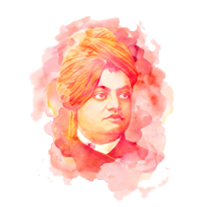

Swami Vivekananda

Painted picture of Swami Vivekananda
Swami Vivekananda's inspiring personality was well known both in India and in America during the last decade of the nineteenth century and the first decade of the twentieth. The unknown monk of India suddenly leapt into fame at the Parliament of Religions held in Chicago in 1893, at which he represented Hinduism. His vast knowledge of Eastern and Western culture as well as his deep spiritual insight, fervid eloquence, brilliant conversation, broad human sympathy, colourful personality, and handsome figure made an irresistible appeal to the many types of Americans who came in contact with him. People who saw or heard Vivekananda even once still cherish his memory after a lapse of more than half a century.
In his own motherland Vivekananda is regarded as the patriot saint of modern India and an inspirer of her dormant national consciousness, To the Hindus he preached the ideal of a strength-giving and man-making religion. Service to man as the visible manifestation of the Godhead was the special form of worship he advocated for the Indians, devoted as they were to the rituals and myths of their ancient faith. Many political leaders of India have publicly acknowledged their indebtedness to Swami Vivekananda.
The Swami's mission was both national and international. A lover of mankind, he strove to promote peace and human brotherhood on the spiritual foundation of the Vedantic Oneness of existence. A mystic of the highest order, Vivekananda had a direct and intuitive experience of Reality. He derived his ideas from that unfailing source of wisdom and often presented them in the soulstirring language of poetry.
The natural tendency of Vivekananda's mind, like that of his Master, Ramakrishna, was to soar above the world and forget itself in contemplation of the Absolute. But another part of his personality bled at the sight of human suffering in East and West alike. It might appear that his mind seldom found a point of rest in its oscillation between contemplation of God and service to man. Be that as it may, he chose, in obedience to a higher call, service to man as his mission on earth; and this choice has endeared him to people in the West, Americans in particular.
read more... about this incredible human being